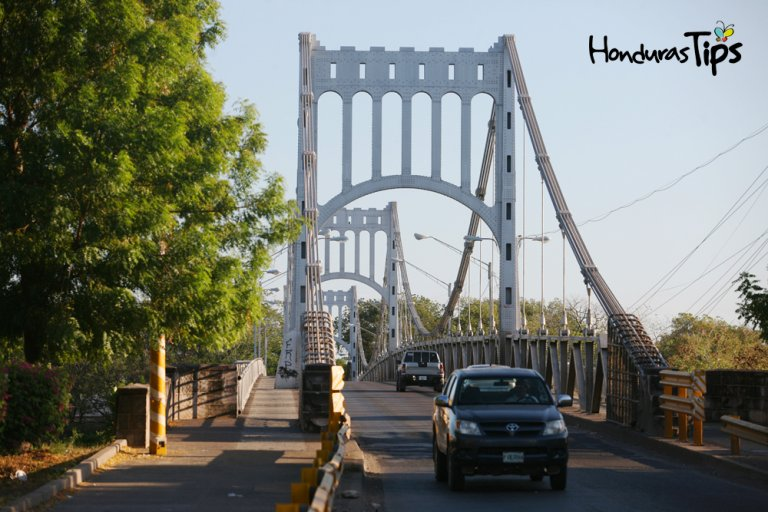
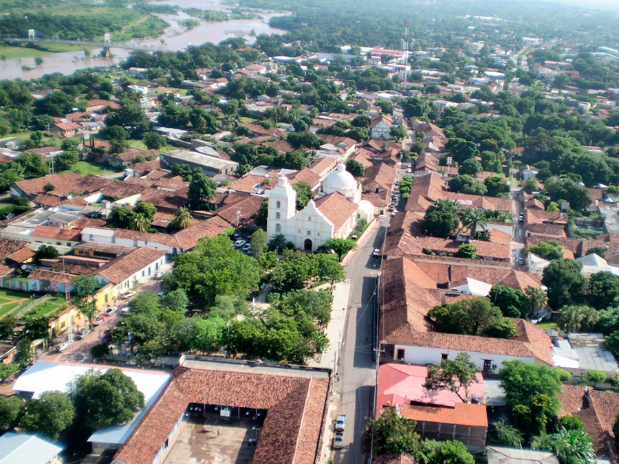

 Choluteca, oficialmente denominada Ciudad de Choluteca y también conocida como la Sultana del Sur,3 es una de las ciudades coloniales más antiguas de la república de Honduras. Ubicada a 133 km de Tegucigalpa4 en la zona sur de Honduras, en la ribera del río Choluteca, en el departamento que lleva su mismo nombre.
Administrativamente, la ciudad de Choluteca se encuentra en el municipio del mismo nombre, el cual tiene una superficie de 1069 km,7 siendo el gobierno de la ciudad y el municipio el mismo. La ciudad de Choluteca es la cabecera (capital) del Departamento de Choluteca.
En la época precolombina la zona Sur de Honduras fue ocupada por varias etnias indígenas, entre los que se destacan los Chorotegas, con la llegada de los españoles a esta zona, se fundó en 1535 por don Cristóbal de la Cueva, como la Villa de Xerez de la Frontera de Choluteca de acuerdo a las políticas colonizadoras.
Principal actividad económica: cultivo de caña de azúcar, melón, sandía, maicillo, maíz, mango y sorgo forrajero; crianza de ganado bovino, equino, porcino y caprino; industria: productos alimenticios, bebidas, tabaco, madera y derivados de la leche.